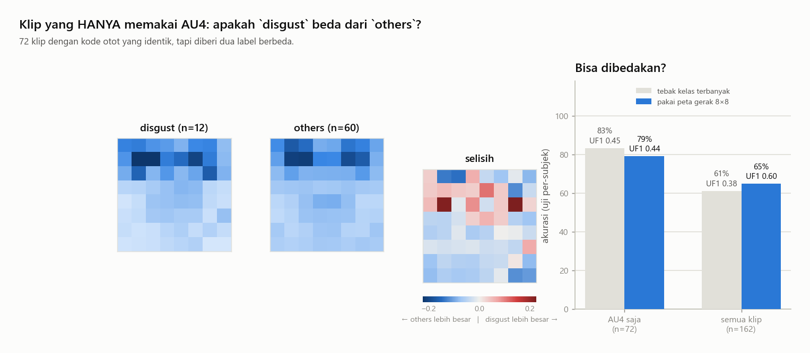
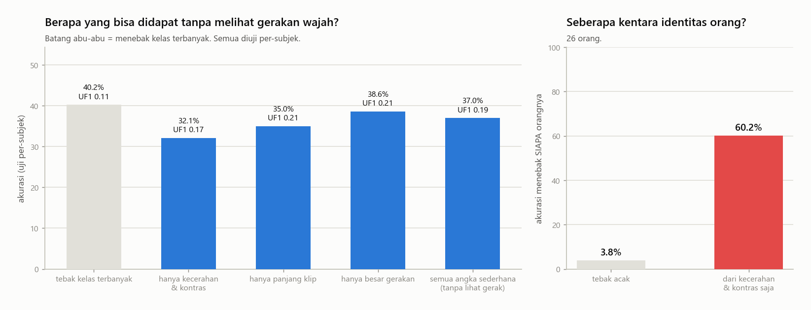
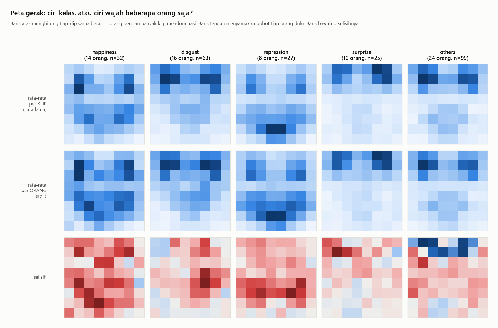
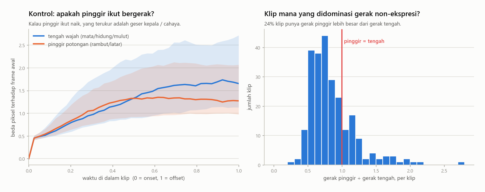
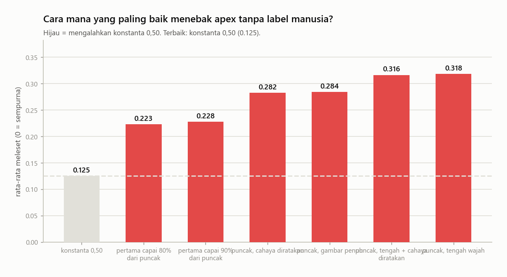
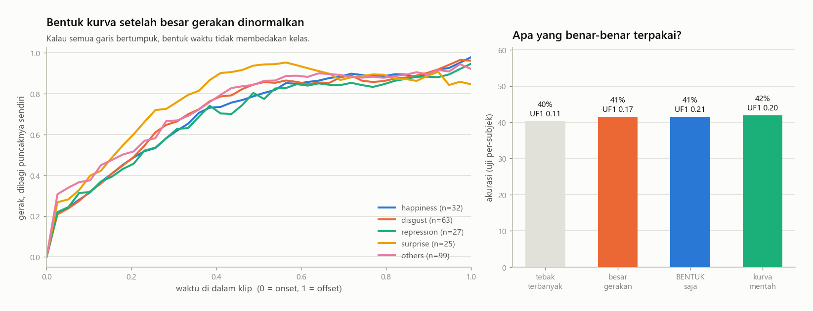
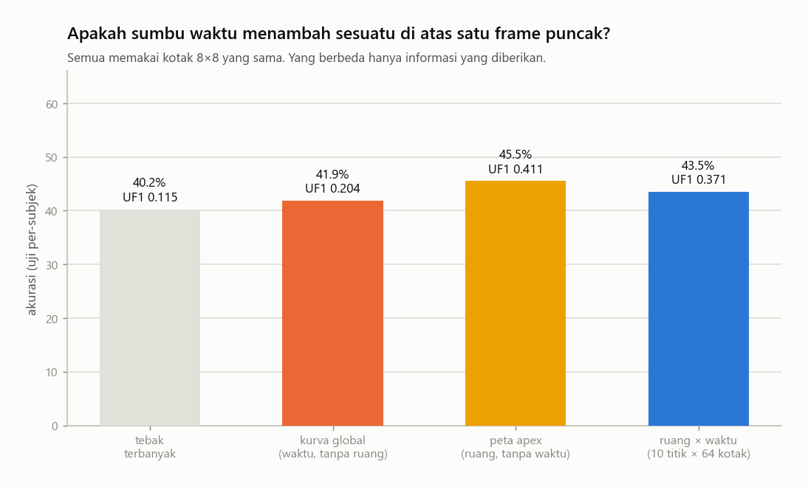

Lima pertanyaan yang muncul setelah membaca ulang grafik tahap 1 dan 2.
Semua pengujian di halaman ini subject-independent: model tidak pernah diuji
pada orang yang pernah dilihatnya saat latihan.
12 disgust + 60 others memakai kode otot yang persis sama (AU4 saja). Peta gerak 8×8 + uji per-subjek: 79.2% / UF1 0.442, sedangkan tebak-terbanyak 83.3% / UF1 0.455 — tidak ada perbaikan. Pada seluruh 162 klip disgust+others pun sama: 64.8% / UF1 0.602 vs 61.1% / UF1 0.379.
Tanpa melihat gerakan wajah sama sekali, akurasi terbaik 38.6% (UF1 0.210) dari 'hanya besar gerakan' — dibanding tebak-terbanyak 40.2% (UF1 0.115). Identitas orang bisa ditebak 60% hanya dari kecerahan dan kontras (tebak acak 3.8%).
Kekhawatiran perancu subjek ternyata kecil: menyamakan bobot tiap orang hampir tidak mengubah peta gerak (korelasi 0.95–0.99 dengan versi lama). Antar kelas, peta paling mirip disgust↔others (+0.91) dan paling berbeda repression↔surprise (-0.03).
Di frame offset, gerak di tengah wajah masih 96% dari puncaknya (pinggir 92%). Gerak pinggir sebesar 0.78× gerak tengah (median); pada 24% klip pinggir bahkan lebih besar.
Bentuk kurva saja: akurasi 41.5% / UF1 0.210. Besar gerakan saja: 41.5% / UF1 0.170. Kurva mentah: 41.9% / UF1 0.204. Tebak-terbanyak: 40.2% / UF1 0.115.
Ruang saja (peta apex): 45.5% / UF1 0.411. Waktu saja (kurva global): 41.9% / UF1 0.204. Ruang × waktu: 43.5% / UF1 0.371. Tebak-terbanyak: 40.2% / UF1 0.115.
Tujuh pemeriksaan
17

Ini adalah pemeriksaan paling penting di halaman ini. Diambil hanya klip yang kode ototnya persis sama (AU4 saja), lalu ditanya: bisakah dibedakan mana yang dilabeli disgust dan mana others?
Kenapa ini penting: kalau jawabannya tidak, maka sebagian dari 'kesulitan' dataset ini ada di labelnya, bukan di modelnya. Tidak ada arsitektur yang bisa memperbaiki dua nama berbeda untuk gerakan yang sama. Itu mengubah cara membaca setiap angka akurasi setelah ini.
18

Kiri: pengklasifikasi yang tidak melihat gerakan wajah sama sekali — hanya angka ringkasan seperti kecerahan, kontras, panjang klip. Kanan: bisakah ditebak siapa orangnya hanya dari kecerahan?
Kenapa ini penting: panel kiri memberi garis dasar yang jujur. Model apa pun yang hasilnya tidak jauh dari batang-batang ini sebenarnya belum belajar apa-apa. Panel kanan mengukur seberapa kentara identitas orang — makin tinggi, makin besar godaan model untuk menghafal wajah alih-alih mengenali emosi.
19

Baris atas: rata-rata semua klip (orang dengan banyak klip mendominasi). Baris tengah: tiap orang diberi bobot sama dulu. Baris bawah: selisihnya.
Kenapa ini penting:repression 70% klipnya dari 3 orang saja, dan sub17 sendirian menyumbang sepertiga. Jadi 'pola gerak repression' pada baris atas bisa jadi sebenarnya 'bentuk wajah sub17'. Baris tengah memperbaiki itu. Kalau kelima peta pada baris tengah tetap mirip satu sama lain, memotong wilayah wajah (ROI) tidak akan menolong.
20

Wilayah tengah (mata/hidung/mulut) dibandingkan dengan pinggir potongan (rambut, latar, tepi). Pinggir dipakai sebagai kontrol: di sana tidak ada otot ekspresi.
Kenapa ini penting: di tahap 2 terlihat gerakan tidak pernah kembali ke nol di frame offset. Ada dua kemungkinan: ekspresinya memang belum selesai, atau kepala/cahaya yang bergeser. Grafik ini memisahkan keduanya. Kalau pinggir ikut naik sebesar tengah, sebagian besar yang selama ini diukur sebagai 'gerak ekspresi' sebenarnya gerak kepala.
21

Tujuh cara menebak posisi apex tanpa label manusia, diadu dengan anotasi asli. Batang lebih pendek = lebih baik.
Kenapa ini penting: di video upload tidak ada apex dari manusia. Grafik ini menjawab dengan angka: cara mana yang layak dipakai, dan apakah usaha mendeteksi apex secara otomatis lebih baik daripada sekadar mengambil frame tengah. Kalau tidak ada yang mengalahkan konstanta 0,50, pakai saja konstanta — lebih sederhana dan tidak bisa gagal.
22

Tiap kurva dibagi puncaknya sendiri, sehingga yang tersisa hanya bentuk waktunya — cepat atau lambat naiknya, kapan mendatar. Kanan: seberapa jauh tiap jenis informasi bisa membawa.
Kenapa ini penting: ini keputusan arsitektur. Kalau 'bentuk saja' hampir tidak lebih baik dari tebak-terbanyak, maka informasi waktu tipis, dan model urutan yang rumit sulit dibenarkan atas model satu-frame yang sederhana. Kalau bentuk membawa sinyal nyata, model urutan memang tepat.
Hati-hati membacanya: yang diuji di sini adalah satu kurva rata-rata seluruh wajah. Itu ringkasan yang sangat kasar. Grafik berikutnya menguji versi yang adil.
23

Tiga jenis informasi diadu dengan bahan yang sama persis (kotak 8×8): hanya waktu (satu kurva, ruangnya dibuang), hanya ruang (peta di frame puncak, waktunya dibuang), dan ruang × waktu (10 titik waktu × 64 kotak).
Kenapa ini penting: ini pertanyaan arsitektur yang sebenarnya. Kalau 'ruang × waktu' tidak lebih baik dari 'ruang saja', maka satu frame puncak sudah memuat hampir semua informasi, dan model urutan yang mahal sulit dibenarkan. Kalau lebih baik, model urutan memang membawa sesuatu yang nyata. Catatan jujur: kotak 8×8 itu kasar — hasil di sini adalah batas bawah, bukan batas atas untuk model sungguhan.